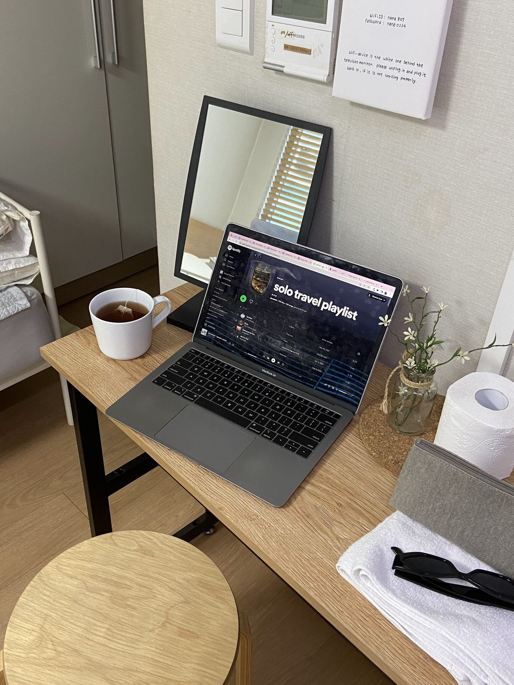
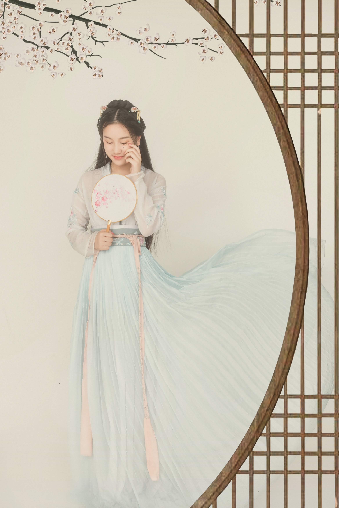
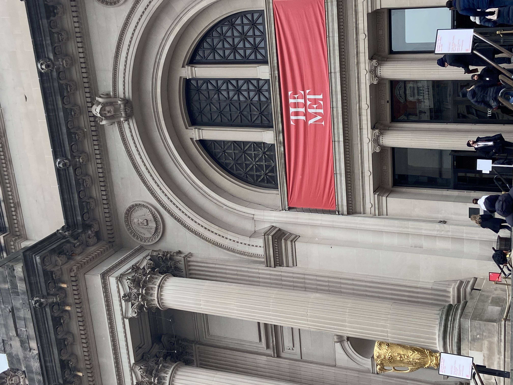

My Most Memorable Trips
______
I love summer vacation!
Seoul, KoreaJuly 2022 My trip to Seoul was an adventure I'll never forget. This was the first time I travelled without my parents. (And my first time travelling to a country where I could not spreak the language!). The bustling streets of the city were a feast for the senses, with vibrant colors, tantalizing smells, and lively sounds everywhere I went. I spent time discovering unique shops, street food vendors, and aesthetic cafes. At night, the city came alive with an electric energy, and I enjoyed the night markets, street performances and fun music. My summer vacation in Seoul was filled with amazing experiences and left me with a deep appreciation for Korean culture and hospitality. Check out the gallery page for more pictures! |
 |
|  |
Chengdu, ChinaAugust 2018 Our return trip to China to visit our relatives was an incredible experience that allowed us to rekindle connections and rediscover the country's beauty and culture. From spicy Sichuan dishes to delicate Cantonese dim sum, one of the highlights of the trip was undoubtedly the food. The shopping was also an adventure, with bustling markets and modern shopping malls offering everything from traditional handicrafts to high-end luxury brands. Beyond the food and shopping, I was amazed by the state-of-the-art technology that China has to offer, from high-speed trains to smart cities. But what made the trip truly special was spending quality time with my family and immersing myself in the local culture. As we shared stories and memories over cups of tea, I felt a deep sense of connection and appreciation for my roots. My trip back to China was a heartwarming experience that reminded me of the country's charm and the importance of family. |
New York, USAJune 2019 New York is a city like no other, with a vibrant energy and a never-ending supply of things to see and do. During my visit, I had the opportunity to watch two Broadway shows, which was a dream come true for a musical theatre enthusiast like myself. The show was an unforgettable experience, with stunning performances, catchy music, and elaborate sets that transported me to another world. Beyond Broadway, I also explored the Metropolitan Museum of Art, which is a must-see destination for any art lover. The Met's extensive collection of art and artifacts from around the world is truly remarkable. New York City truly lived up to its reputation as the city that never sleeps, and I left feeling invigorated and inspired by the unique energy of this amazing place. |
 |